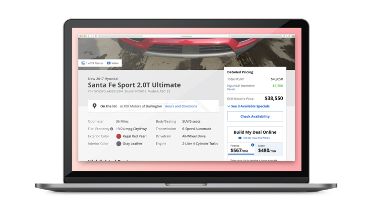
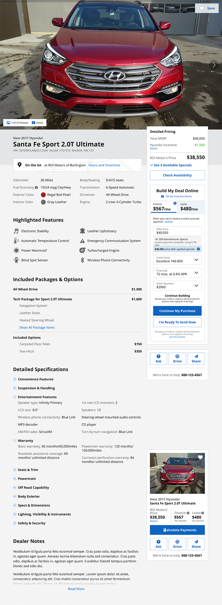
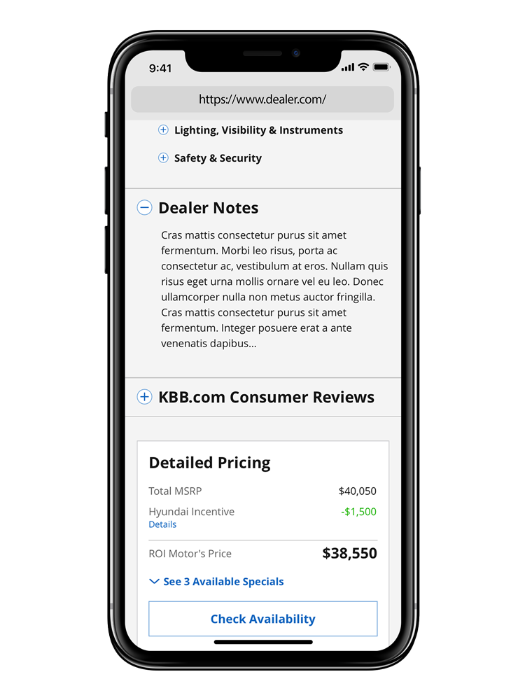
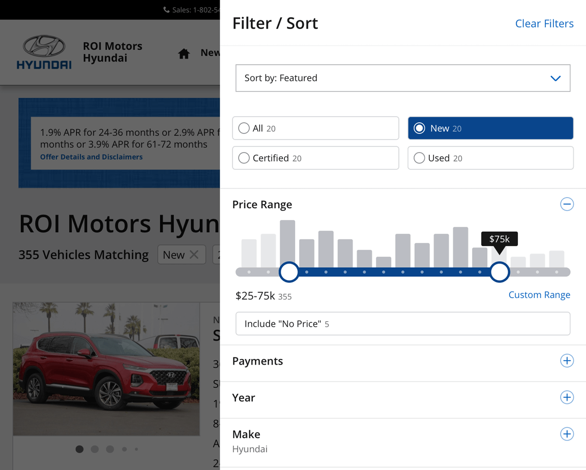
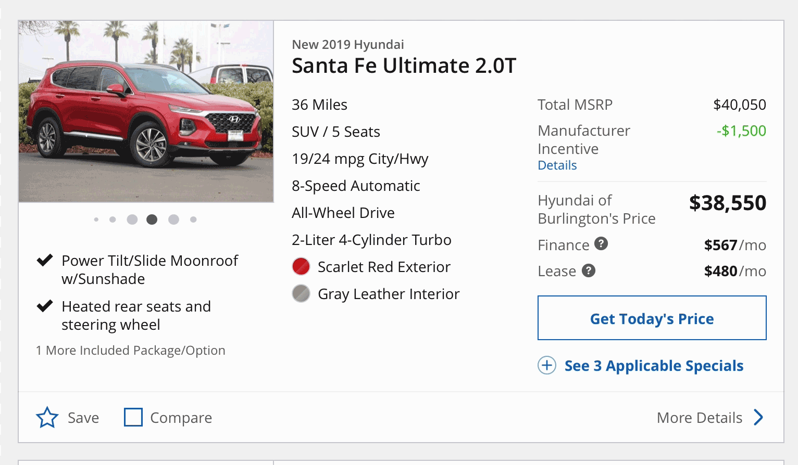
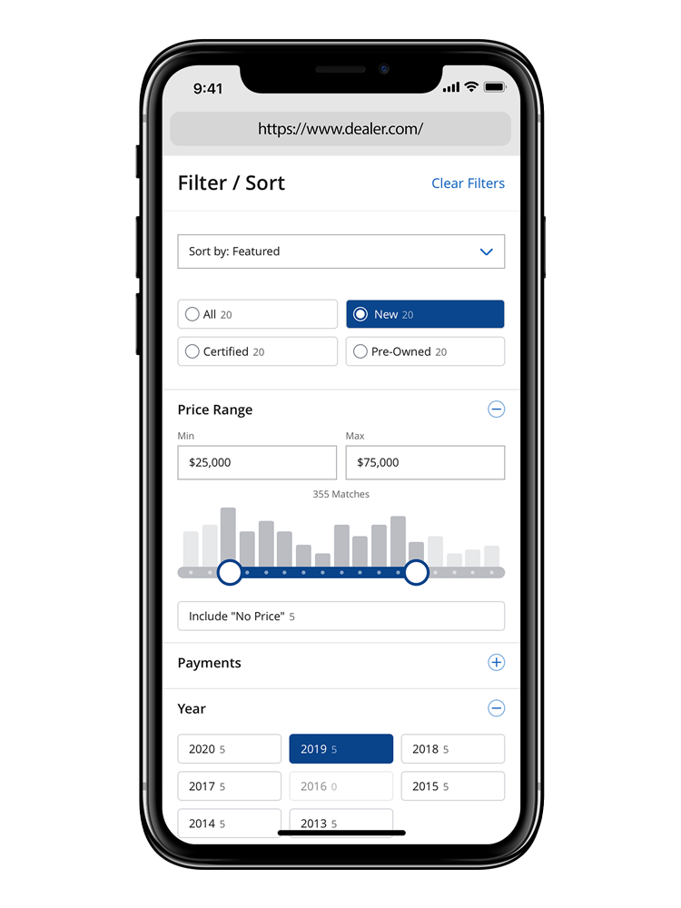

Car Shopper User Experience
During my tenure at Dealer.com, nothing has been more important than the user experience design of the car shopper. At the core of the company, this is what we do—make it easy for consumers to find a vehicle of interest and communicate that to the dealership.
The Vehicle Details Page
The Vehicle Details Page is the cornerstone of a car dealer's web site, we spent a little over a year designing and developing a new details page. That might seem excessive until you realize that it had to accommodate upwards of 15,000 different dealerships, be customizable to their needs and desires, support an entirely new development philosophy and a new design system.
Involvement
My role in the project was extensive, from initial design workshops, wireframes and detailed rounds of mockups to prototyping, extensive user testing, refinement, and development support.
The Results
The end page was in large part a matter of creating clear hierarchy for users. The photos are both horizontally and vertically responsive, ensuring users can see the image at high resolution, while still keeping the high level information about the car above the fold. Below the image, we places information and specifications on the left, with pricing and actions in the right column.
All Good?
As with most projects, there are always compromises involved. So what would I do differently? The default visual design of the page makes it feel more like a wireframe than a complete solution. I would lift the visuals with a bit more use of color, iconography and emphasis on critical information. Why didn't we do that? Ultimately the baseline design had to work for everyone and usually that means it has to meet at a low demoninator.

The Search Results Page
The second part of the overhaul of our system has been the Search Results Page (SRP). Like the details page, it has to be backward compatible with years of dealer preferences, forward-facing to be fully responsive and fully customizable both in function and in look. I've been responsible for overall page layout, overhauling the page heading and functionality and faceting design.
Research Process
We don't have extensive resources such as dedicated UX Research, so we have to make do as a team. This has meant I get to learn a lot about UX research. One of the primary tools we use is a service from usertesting.com. It allows us to write a simple interview script and get mockups, prototypes or final working content in front of users quickly. My favorite part of that process is how quickly I can put something out, get feedback and iterate.
Often it can be a matter of a couple of hours for a quick hypothesis to learn if something is spot on or needs some small tweaks. It's small research like this that can improve the end experience and avoid little issues. A good example is packages and options on vehicles. This can be a confusing term (are options "optional") that we were able to make a little less confusing by adding one word to the heading, "Included" that I was able to verify added a lot of clarity.
Early Concepting
Of course, not everything I do makes it to production. Sometimes it is too complex to develop, sometimes it is too complex to support as an organization, or sometimes it just does not work. But those early ideas are usually highly informormative to the final deliverable.
Let it Flow
This advanced concept clearly shows users what is happening as they go through the flow of information from searching, comparing and viewing vehicle details. Animations make it clear when a vehicle is added or removed from the listings. A comparison mode makes it easy to add or remove vehicles of interest. And when a user is ready to delve deep into the details, they can quickly switch between similar listings, while progressively getting the information they want, without being overwhelmed.
Panels
Sometimes the best ideas are the ones you steal repurpose. The above concept spun off of a site I was browsing that utilized a panel-based approach, as opposed to pages. I quickly saw the potential for a more linear flow of information from left to right. This would allow users to move from listings to details and back without having to load singular pages.
Build and Search
Consumers utilize manufacturer sites to daydream and build their perfect version of a vehicle with build and price tools. I explored a concept that brings a similar, but simplified appoach leading users towards inventory as they build out their vehicle. As a user configures their vehicle on the left, a panel on the right highlights matching inventory on the dealer lot.
Lessons Learned
Advanced concepts can be both extremely rewarding and quite frustrating at the same time. I love getting deep into a concept and figuring out how to make the complex concept user-friendly. However, that often means being more than a few steps ahead of an organization. When I first started, I figured (incorrectly) that concepts could see the light of day in the course of a month or two. The longer I have been working in the field, the longer that timeframe has become, and I have learned to appreciate the wins that do make it to a site, while not losing my drive to be ahead, sometimes by years.